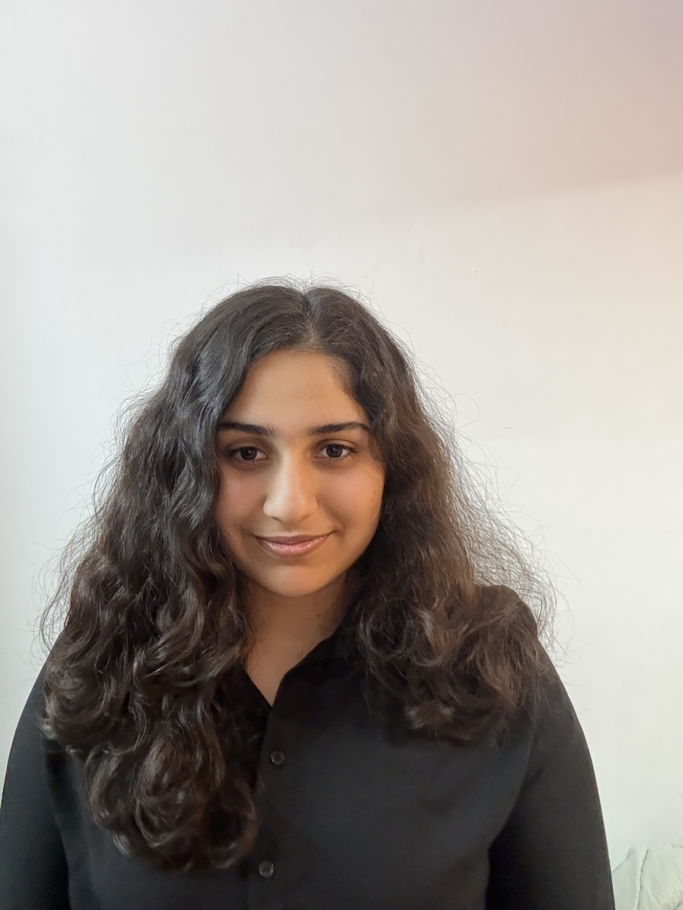

Tia Ahuja

Summary
First-year Computer Science student, tech enthusiast, and problem solver. From databases to web development, I love building, learning, and transforming ideas into meaningful projects.
Education
- Manipal University Jaipur (B.Tech CSE)
- Delhi Public School,Gurgaon (Senior Secondary Education)
Work Experience
-
Iaeste Incomming coordinator(2024-present)
-
Handling documentation
-
Coordinating stays/logistics for international interns
-
Communication and organizational work
-
Rotaract Club of Manipal University Jaipur — Club Service Working Team (2025-present)
-
Contributed to event coordination and club activities
-
Worked collaboratively on student engagement initiatives
-
Gained teamwork, communication, and organizational experience
-
EngIN Program — Student Mentor (2024-2025)
-
Taught English to children/young students in Ukraine
-
Developed communication and mentoring skills
-
International volunteering exposure
Projects
-
“Tap to Fix” Instagram Initiative
-
Helping people solve digital/technical issues
-
Providing quick solutions and guidance through Instagram
-
Content creation + digital communication
-
Python & MySQL Calorie/Food Tracker
-
Developed a Python and MySQL-based food recommendation system that categorizes dishes by taste preferences such as sweet, spicy, salty, and sour.
-
Designed and managed a relational database to store recipes, ingredients, nutrition information, and fun facts.
-
Built an interactive menu-driven application that enables users to explore and retrieve food information efficiently.
Certifications
- DELF A2 French Language Certification (Alliance Française)
- Girls Who Code Program
- Ashoka University Computer Science Summer Program
- Accenture Data Science Virtual Experience Program (Forage)
- Currently pursuing Angela Yu's Web Development Bootcamp
Skills
Technical Skills
-
Python ⭐️⭐️⭐️⭐️
-
MySQL ⭐️⭐️⭐️
-
C ⭐️⭐️⭐️
-
HTML ⭐️⭐️
Soft Skills
-
Communication ⭐️⭐️⭐️⭐️
-
Teamwork ⭐️⭐️⭐️⭐️
-
Problem Solving ⭐️⭐️⭐️⭐️⭐️
-
Creativity ⭐️⭐️⭐️⭐️
Languages
-
English (Fluent)
-
Hindi (Native)
-
French (Intermediate)
Other